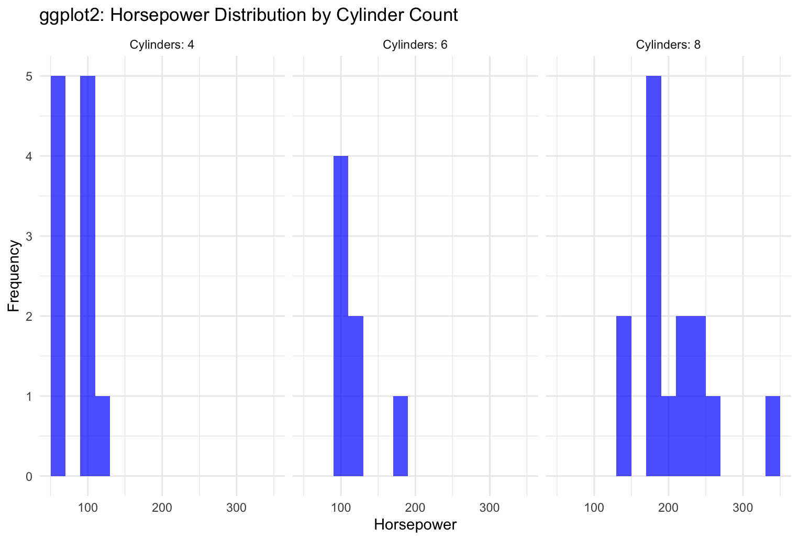
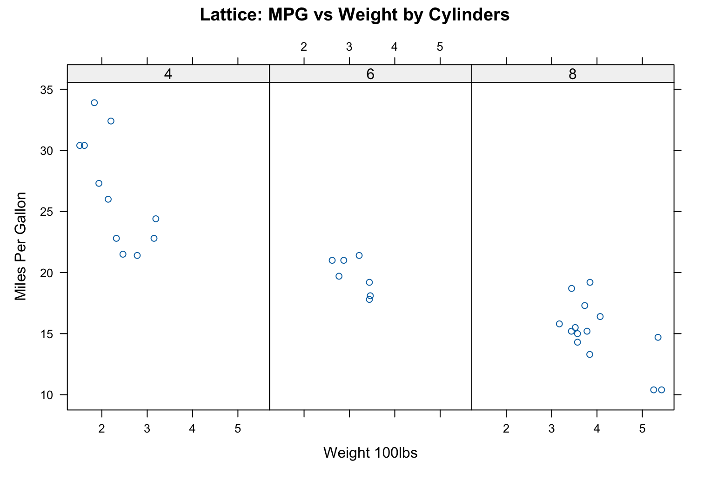
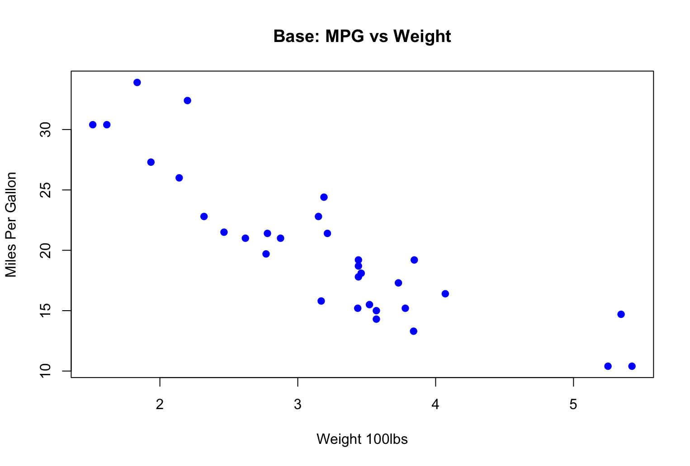

Base R uses simple commands like plot(x,y) which is easy but lacks control. Lattice uses xyplot () and is best used with groped data. Ggplot2 uses the ggplot() syntax with + and other methods to build the plots. Ggpolot2 gives me the most control and the ability to build production grade visualizations. I have worked with ggplot2 the most, so this opinion is biased. I did have challenges switching between the different syntax of the charts. I like the more drawn-out syntax of ggplot2 with a more layered approach to plotting by adding to each statement.